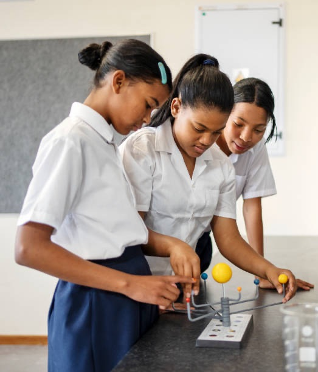

StudySync unifies AI-powered self-study, verified curricula, human tutors and whole-school intelligence into a single Learning Operating System — built for ZIMSEC, Cambridge, NSC and IEB learners from Form 1 to A-Level.
Across the world, classrooms are being rebuilt around data, personalisation and artificial intelligence. StudySync exists so that African learners are not spectators of that shift — but its front row. We digitise the syllabi our students actually sit for, then wrap them in the same calibre of AI tooling found anywhere on earth.
ZIMSEC Forms 1–6, Cambridge Grade 8 to A-Level, and South Africa's NSC & IEB Grades 8–12 — every subject mapped topic-by-topic with examiner-style objectives and assessment weightings.
Generative AI drafts study plans, grades structured answers, explains photographed problems step-by-step, flags weak topics and adapts revision — governed by quotas, human verification and audit trails.
A fast, installable web app that works on the devices families already own — phone, tablet or shared laptop — with lightweight pages designed for real African bandwidth.
The learners who master AI-assisted study today are the engineers, doctors and founders Africa needs tomorrow. Our job is simple: make sure no student is left behind because of where they study.
The StudySync MissionStudyMode turns a syllabus into a living study companion. Pick your curriculum, grade and subjects once — StudySync loads verified topic maps and builds an adaptive plan around your real exam dates.
Mastery is tracked per topic and per concept. The plan re-sequences itself daily around what you're strong at, what's slipping, and how many days remain to the exam.
Photograph any problem — the AI reads it, solves it step-by-step in exam-marker style, then generates practice variants so the method sticks. Full solve history included.
Timed, section-based mock exams built from your syllabus weightings. Structured answers are AI-graded with marks, examiner feedback and model answers — plus exam-readiness scoring.
Auto-generated flashcard decks and spaced active-recall sessions per topic, with quizzes that adapt difficulty as your mastery climbs.
Weak-topic alerts, concept mastery breakdowns, mastery history charts, exam countdowns, streaks, achievements and leaderboards keep motivation and evidence in one place.
AI handles the repetition; people handle the breakthroughs. StudySync's tutoring marketplace connects learners to vetted tutors across every curriculum we support — booked, paid and reviewed inside the platform.
Tutors complete a structured onboarding wizard — qualifications, subjects, levels and rates — and pass verification before they can teach a single lesson.
Tutors are ranked per topic from real outcomes, so a learner struggling with, say, Quadratic Functions is matched to the tutor who moves that exact needle.
In-app booking management, live online lessons, and lesson-reinforcement prompts that push what was taught straight into the learner's StudyMode plan.
Pay-as-you-go or bundled lessons with clear pricing, receipts, and an admin-managed refund process — no envelope economics.
No more hunting through WhatsApp groups for a blurry 2019 Paper 2. The StudySync library is a curated, metadata-rich archive of past papers and official syllabus documents, searchable by curriculum, subject, year, session and paper number.
Papers carry full metadata — board, level, year, session, paper and variant — so revision by paper type or by topic takes seconds, not evenings.
PDFs stream securely inside the app with access control, keeping the library sustainable and the content protected.
Library content feeds mock exams and practice sessions, so past-paper work counts toward the same mastery record as everything else.
240+ subject-by-grade syllabus maps across ZIMSEC, Cambridge, NSC and IEB — human-verified topic trees with objectives, prerequisites and assessment weightings.
StudySync school workspaces bring the whole institution onto one operating picture — cohorts, classes, teachers, tutors, learners and guardians, each with the right view and nothing more.
Set up campuses, grade cohorts and classes with role-based memberships — owner, admin, teacher, tutor, student, guardian — and invitation-based enrolment.
A class-scoped view of risk, mastery and interventions: see which learners are slipping on which concepts before the test says so, with proposed plan changes ready to approve.
Whole-school analytics, allocations, verifications and automation controls — schedule, run and audit learning-ops jobs across the workspace.
Science and specialist departments can import their own verified topic maps through the admin import panel, keeping school-specific schemes of work in sync.

Today, a learner's education is split across silos: the school knows the term marks, the private tutor knows the weak spots, the parents know the mood — and none of them talk. The LOS is StudySync's answer: a shared, permissioned record of mastery that closes the gap between school teaching and private tutoring.
Every quiz, mock exam, tutor note, flashcard session and recall attempt lands as evidence in one concept-level mastery graph — the same graph the school, the tutor and the AI all read.
The LOS detects risk early and proposes targeted interventions — concept re-teach, guided practice, prerequisite repair, exam sprints, consistency recovery or tutor escalation — before results collapse.
When the tutor sees what the teacher taught, and the teacher sees what the tutor fixed, private lessons stop repeating school and start compounding it. Less duplicated cost, faster progress, no blind spots.
Weakest-concept surfacing with recent evidence attached, exam-readiness scoring, and class kernels that mirror the learner's LOS for teachers — read-only, privacy-safe.
Workspace automation schedules recurring jobs — guardian digests, readiness recalculations, intervention sweeps — with a full audit log of every run.
Guardian views and weekly digests translate the mastery graph into plain language: what improved, what needs attention, and what the plan is — proof of progress, not promises.
Minors, money and data share this platform — so accountability isn't a policy page, it's architecture.
Guardian emails are captured at onboarding; weekly reports and the guardian portal show real study activity, mastery movement and tutor sessions.
Student emails and personal fields are kept private with row-level security; teachers and tutors see only class-scoped, permissioned views.
Tutors pass identity and qualification verification before teaching; schools verify staff through workspace membership approvals.
AI usage is quota-managed and logged; curriculum content is human-verified before it's trusted; sensitive science content follows a verified-import-only policy.
Clear plan pricing, in-app payment records, and an auditable admin refund workflow — every transaction accounted for.
Role-based admin access with security and audit pages; automation jobs, verifications and interventions all leave a trail.
Learners, tutors, schools and guardians — there's a place for each of you inside StudySync. Set up an academic profile in minutes and let the Learning Operating System take it from there.